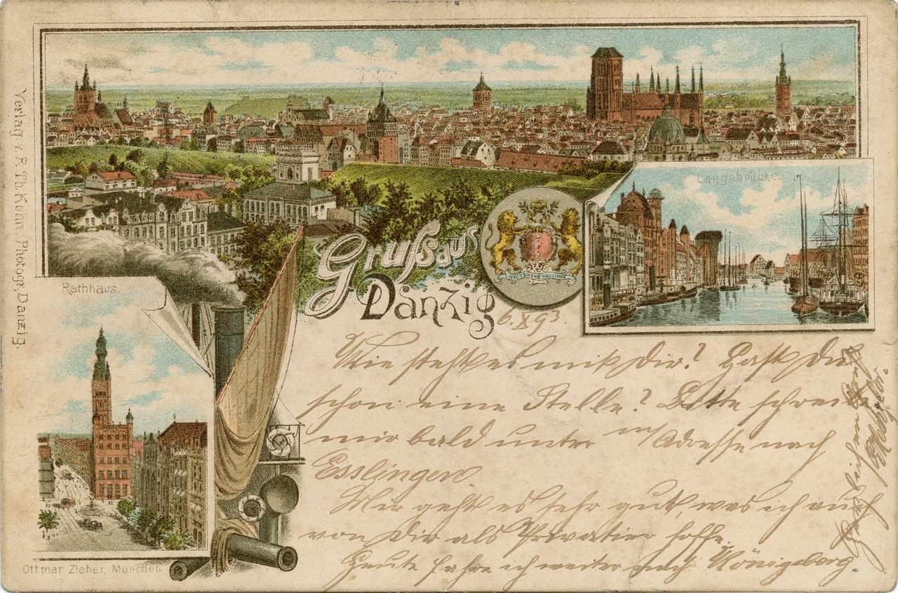

Raport z działania Cyfrowego Muzeum Pocztówek
2024-07-16
Rozdział 1 Wprowadzenie do raportu

Pocztówka - Gdańsk
- Cyfrowe Muzeum Pocztówek, prowadzone przez fundację Bardzo Lokalne Historie, od ponad dwóch lat intensywnie pracuje nad dokumentowaniem i udostępnianiem unikalnych zasobów pocztówkowych z terenów dzisiejszej Polski oraz ziem polskich sprzed 1939 roku. Projekt ten zyskuje na znaczeniu, stając się cennym narzędziem edukacyjnym i badawczym, a także miejscem spotkań dla pasjonatów historii i lokalnych społeczności. Dzięki szerokiemu zaangażowaniu wolontariuszy oraz innowacyjnym rozwiązaniom technologicznym, muzeum konsekwentnie rozwija swoje zbiory, jednocześnie zapewniając wysoką jakość prezentowanych materiałów.
- Raport ten przedstawia kluczowe działania i osiągnięcia Cyfrowego Muzeum Pocztówek w latach 2022-2023, z szczególnym uwzględnieniem metodologii badań użytkowników, statystyk związanych z digitalizacją oraz planów na przyszłość. Dzięki przeprowadzonym wywiadom z 39 użytkownikami muzeum, udało się zgromadzić cenne informacje na temat ich doświadczeń i oczekiwań. Wyniki tych badań pozwalają na lepsze zrozumienie potrzeb odbiorców oraz identyfikację obszarów, które wymagają dalszego doskonalenia.
- W perspektywie nadchodzącego roku 2024, fundacja zamierza kontynuować prace nad poszerzaniem zbiorów i wprowadzaniem nowych funkcji, które zwiększą interaktywność i dostępność zasobów muzeum. Planowane działania obejmują m.in. digitalizację kolejnych pocztówek, rozwój narzędzi do społecznościowego opisywania oraz implementację zaawansowanych technologii rozpoznawania obiektów historycznych. Wszystkie te inicjatywy mają na celu nie tylko wzbogacenie zasobów Cyfrowego Muzeum Pocztówek, ale również aktywne zaangażowanie społeczności w proces zachowywania i promowania lokalnego dziedzictwa kulturowego.